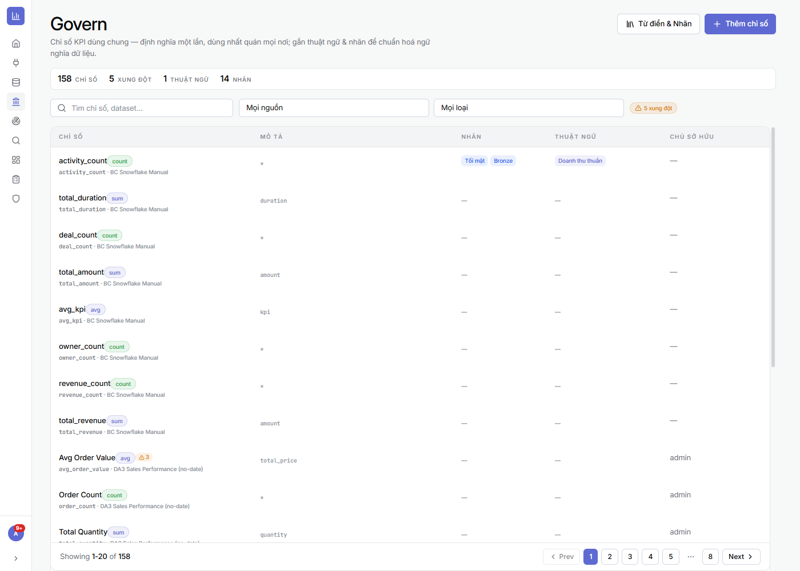
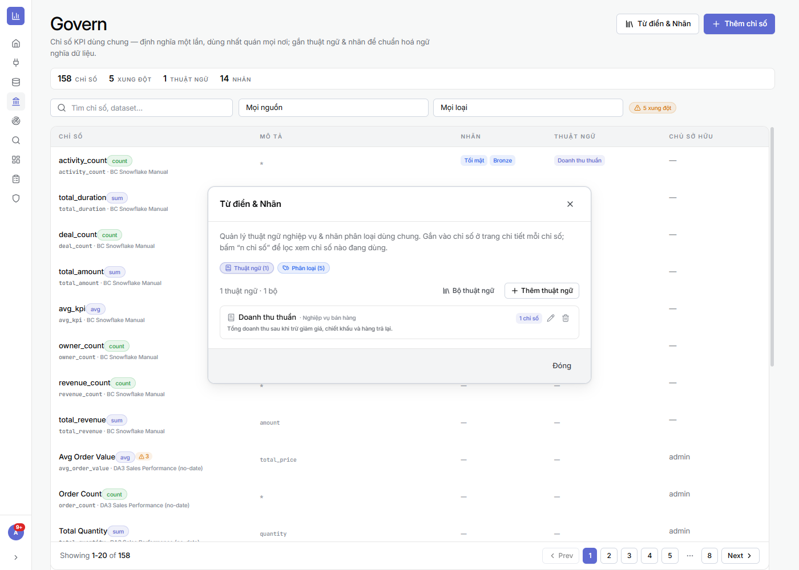

⚙️ Đang phát triển: Govern là module mới, vẫn đang hoàn thiện — giao diện & tính năng có thể thay đổi ở các bản kế tiếp.
6.1Danh mục chỉ số dùng chung
Vùng này để làm gì: tập trung mọi chỉ số/KPI của hệ thống về một danh mục để đối chiếu & chuẩn hoá — thay vì mỗi báo cáo tự định nghĩa một kiểu.
- Bảng chỉ số: mỗi dòng là một chỉ số kèm mô tả, nguồn/dataset, loại (sum/count/avg…), nhãn, thuật ngữ, chủ sở hữu.
- Thống kê đầu trang: tổng số chỉ số, số xung đột, số thuật ngữ, số nhãn.
- Cảnh báo xung đột: badge “⚠ xung đột” đánh dấu chỉ số bị định nghĩa không thống nhất giữa các nơi để bạn rà lại.
- Tìm & lọc theo tên/dataset, theo nguồn, theo loại.
⚙ Cách làm
- Mở Govern ở thanh điều hướng trái.
- Dùng ô tìm + bộ lọc Mọi nguồn / Mọi loại để khoanh vùng chỉ số.
- Bấm lọc “⚠ xung đột” để xem riêng các chỉ số đang mâu thuẫn và xử lý.
- Bấm “+ Thêm chỉ số” để khai báo một chỉ số dùng chung mới.

6.2Từ điển & Nhãn (chuẩn hoá ngữ nghĩa)
Vùng này để làm gì: quản lý thuật ngữ nghiệp vụ (định nghĩa chuẩn) và nhãn phân loại dùng chung, rồi gắn vào chỉ số để cả công ty hiểu số liệu giống nhau.
- Thuật ngữ: mỗi thuật ngữ có tên, nhóm nghiệp vụ, định nghĩa (vd “Doanh thu thuần = tổng doanh thu sau giảm giá, chiết khấu, hàng trả lại”) và số chỉ số đang dùng nó.
- Phân loại (Nhãn): gắn nhãn (vd Tối mật, Bronze) để phân loại/độ nhạy của chỉ số.
⚙ Cách làm
- Ở trang Govern, bấm “Từ điển & Nhãn” (góc trên phải).
- Chuyển giữa tab Thuật ngữ / Phân loại; bấm “+ Thêm thuật ngữ” để tạo định nghĩa chuẩn mới.
- Gắn thuật ngữ/nhãn vào chỉ số ở trang chi tiết mỗi chỉ số; bấm “n chỉ số” để lọc xem chỉ số nào đang dùng.

🔗 Kết hợp với các module khác